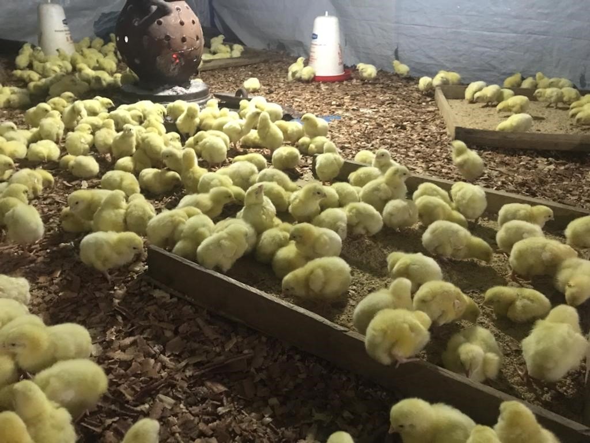
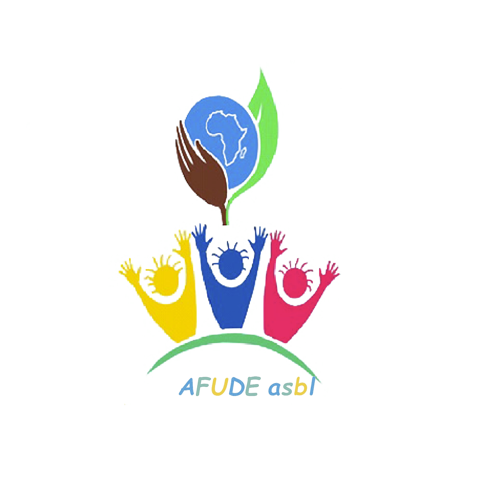

AFUDE was involved in this event in order to support the young girl’s talents in the fields of sewing in the DRC/ BENI town. Visit this link for more information and pictures:
How if people from everywhere in the country and even out will come and get clothes from DRC?

L’autonomisation des femmes à travers l’agriculture et l’élevage
L’autonomisation des femmes à travers l’agriculture et l’élevage. AFUDE est engagé dans le processus de développement communautaire dans lequel cette organisation met au centre les actions des femmes dans différents domaines de développement


Ce domaine met l’accent principalement sur la couture, en offrant des formations pratiques et théoriques à des jeunes filles avec les jeunes créatrices professionnelle, un domaine clé qui peut rapidement devenir un vecteur d’autonomisation et d’insertion professionnelle.


Dans le but de collaborer avec toute personne morale ou physique visant la réalisation des mêmes objectifs focalise ses actions sur les domaines d’intervention suivants :


Ce domaine de la création artisanale peut aussi rapidement devenir un vecteur d’autonomisation et d’insertion professionnelle.. Des bracelets, des sous plats, de sacs de différents modèles, etc.


Sise N°1B Av. de l’Athénée, Quartier
Ndendere, Commune d’Ibanda / Bukavu
Contacts : +243(0) 998668719, +243
(0)998665732, +243(0) 994453083, +243(0)
824877378
Email : afudedrc73@gmail.com
Site web : https ://afude.site
facebook|intagram: afude_officiel_DRC
